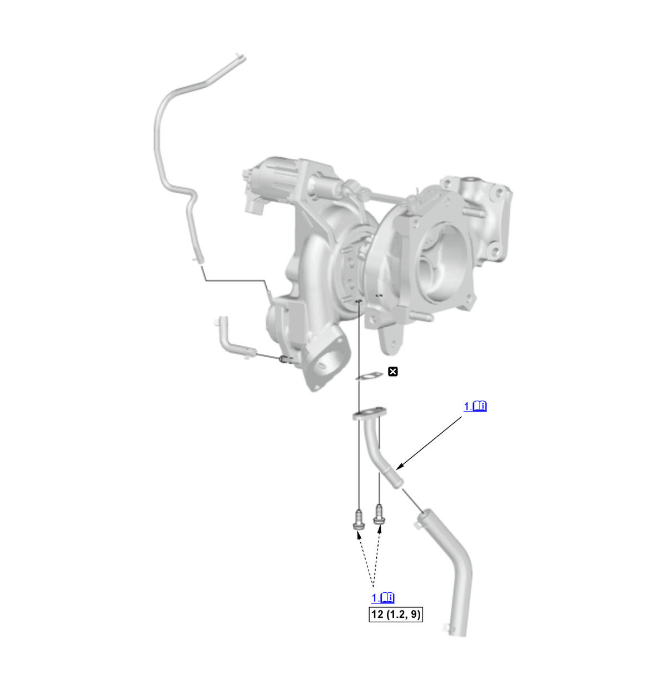
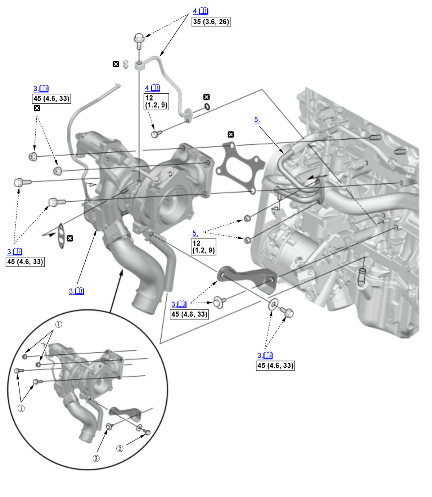
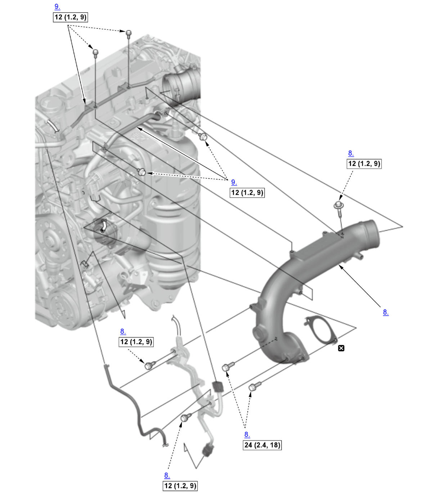

Turbocharger Removal and Installation (K20C1) (2017 2018 2019 2020 2021): Installation: Procedure
Numbered call-outs in figure pertain to list numbers in following procedure.

Courtesy of HONDA, U.S.A., INC. |
Detailed information, notes, and precautions |
 |
Torque: N.m (kgf.m, lbf.ft) |
 |
Replace |
Numbered call-outs in figure pertain to list numbers in following procedure.

Courtesy of HONDA, U.S.A., INC. |
Detailed information, notes, and precautions |
|
Torque: N.m (kgf.m, lbf.ft) |
|
Replace |
Numbered call-outs in figure pertain to list numbers in following procedure.

Courtesy of HONDA, U.S.A., INC. |
Torque: N.m (kgf.m, lbf.ft) |
|
Replace |
- Oil Return Pipe - Install
NOTE:
- If removed the oil return hose, install it as shown.
- Apply new engine oil to the inside edge of the oil return hose.
- Charge Air Cooler Pipe - Install
- Turbocharger - Install
NOTE: Tighten the turbocharger/bracket mounting bolts and nuts in the numbered sequence shown.
- Oil Feed Pipe - Install
1. Apply engine oil to the threads and flange of the oil feed pipe orifice bolt (A). 2. Tighten the oil feed pipe mounting bolt (B) and the oil feed pipe orifice bolt until the oil feed pipe sit on the turbocharger and the engine block.
3. Tighten the oil feed pipe mounting bolt to the specified torque.
4. Set the washer portion (C) to the direction of D.
5. Tighten the oil feed pipe orifice bolt to the specified torque.
6. Make sure the washer portion is installed on the area (E) as shown.
- Water Pipe - Install
- Charge Air Cooler Hose - Connect
NOTE: Make sure to review the hose band precautions before installing the charge air cooler hose(s).
- TWC Assembly - Install
- Turbocharger Inlet Joint Pipe - Install
- Water Bypass Pipe - Install
- A/C Condenser Fan Shroud Assembly - Install
- Engine Cover - Install
- Engine Coolant - Refill
- Engine Oil Level - Check
Procedure After Replacing Turbocharger
- PCM - Reset